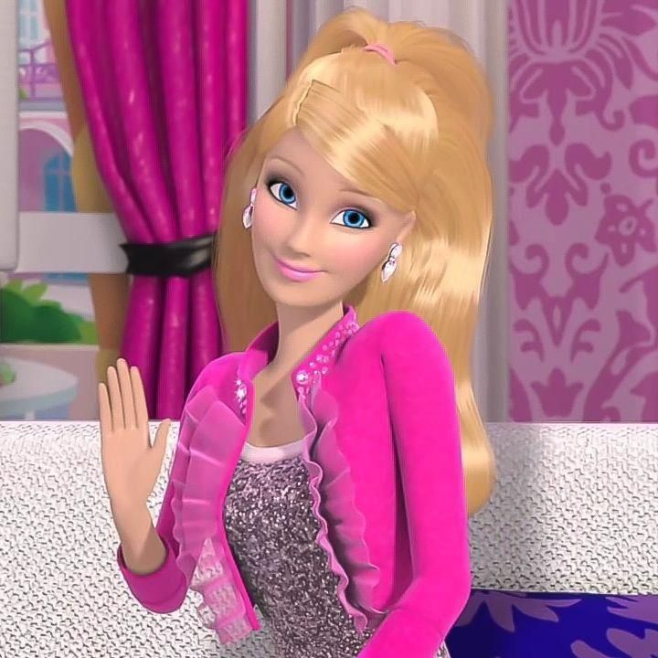
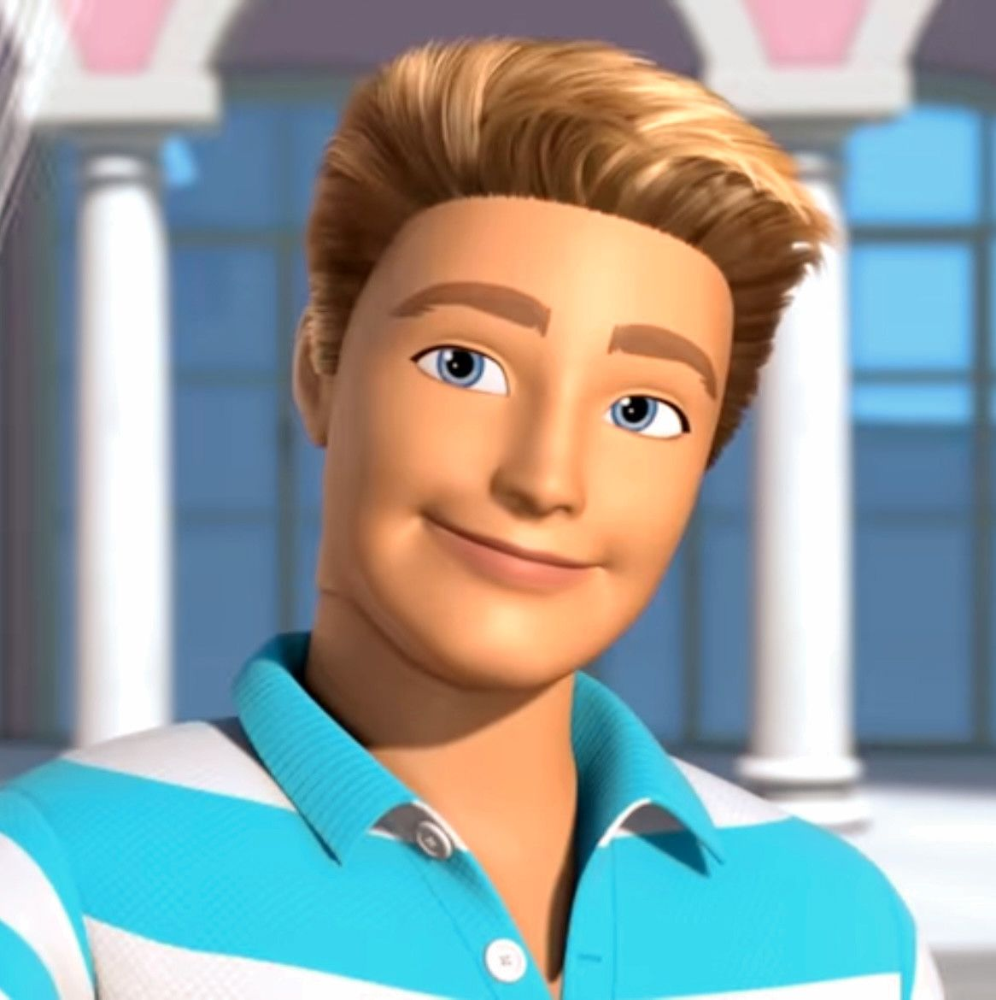
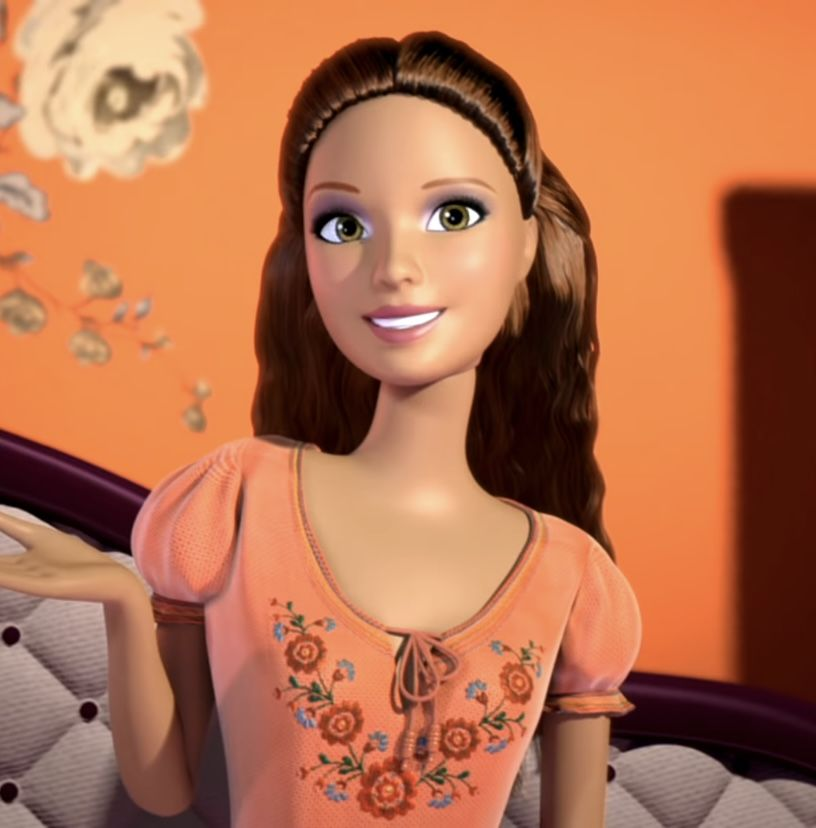
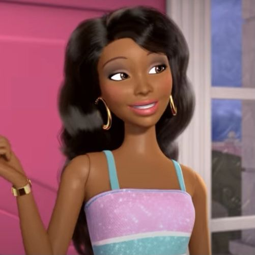
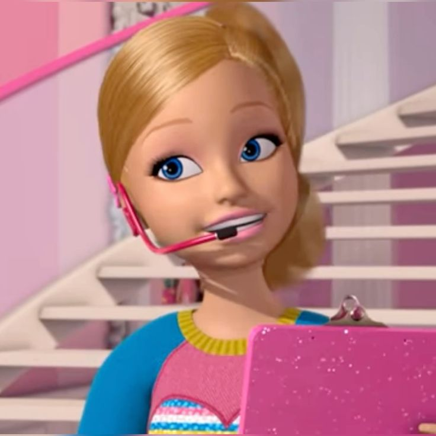
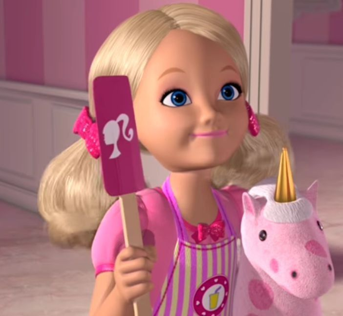
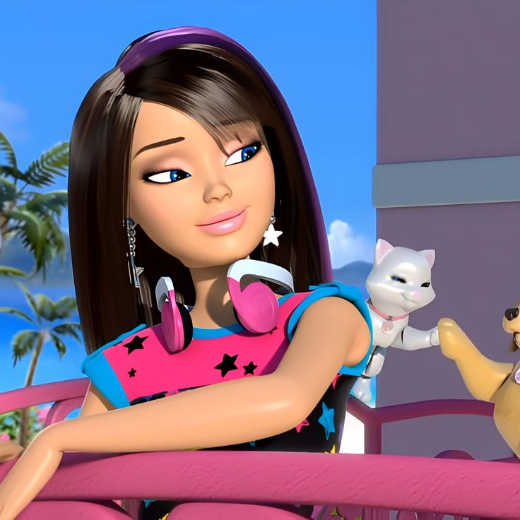
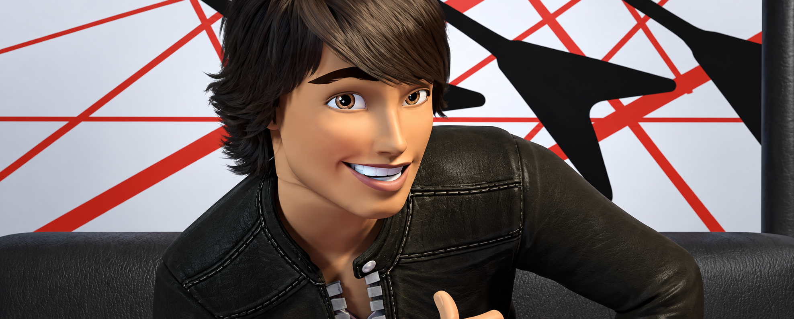

Barbie
A protagonista das histórias, conhecida por sua coragem, criatividade e determinação.
Conheça os personagens desse universo mágico!

A protagonista das histórias, conhecida por sua coragem, criatividade e determinação.

Amigo da Barbie que aparece em diversas aventuras e está sempre disposto a ajudar.

Uma das melhores amigas da Barbie, conhecida por sua amizade e personalidade divertida.

Amiga da Barbie que participa de várias aventuras e ajuda suas amigas nos momentos difíceis.

Irmã mais nova da Barbie, aventureira, divertida e sempre pronta para novas experiências.

A irmã caçula da Barbie, curiosa, criativa e cheia de imaginação.
Uma personagem determinada e competitiva que aparece em várias histórias da Barbie.

Irmã mais nova da Barbie, inteligente, curiosa e ligada em tecnologia e novas experiências.

Irmão de Raquelle, divertido e confiante, que aparece em várias aventuras.